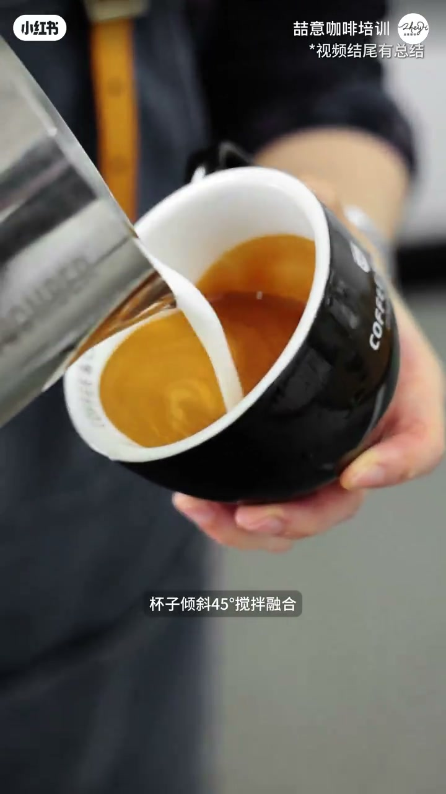
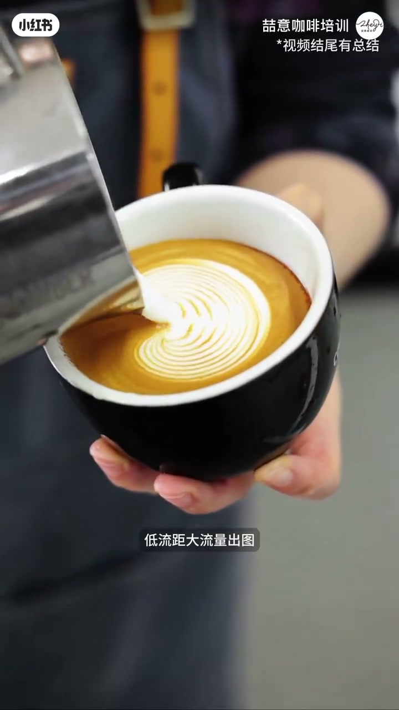
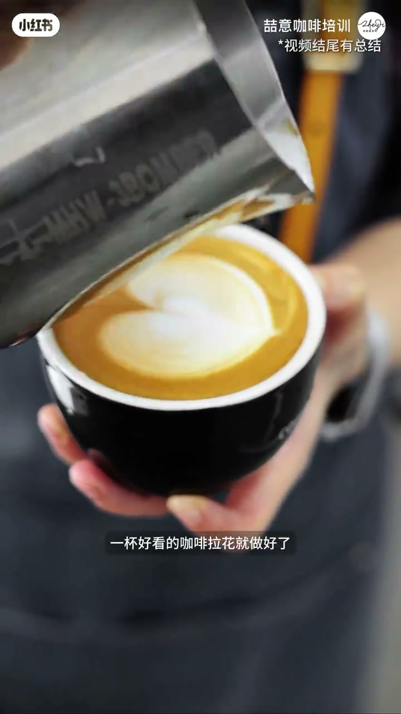
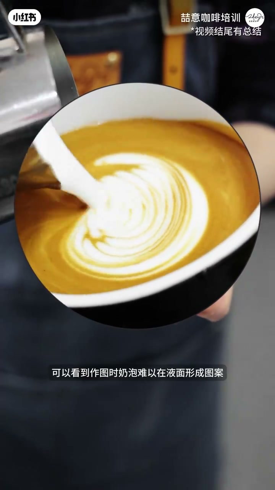
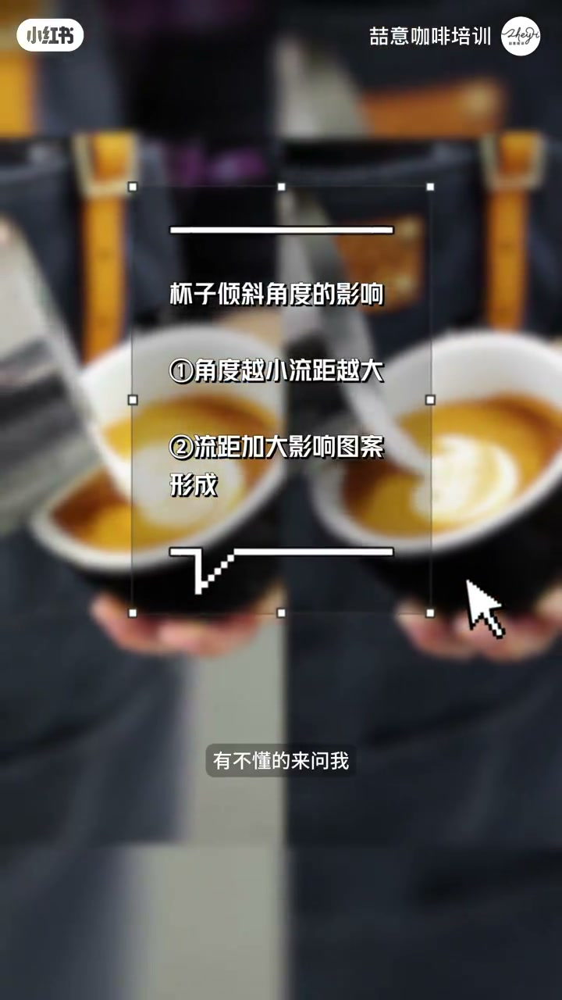

内容要点
这是一条 44 秒的拉花对比。口播完整，画面字幕用来校正听写，并补上结尾没有被念出来的两条口诀。
知识结构
口播和字幕都把融合阶段写成杯子倾斜 45°。接着是低流距、大流量出图。这一轮停在一枚白色心形上。
回到搅拌，杯子放得更平。作图时奶泡难以在液面上形成图案，纹路挤在一起。作者的解释是流距被拉高，奶泡向下注入，纹路被压到浓缩液面下。
口播说杯子足够倾斜，流距会大大降低，奶泡更能漂在表面。结尾总结卡写：角度越小流距越大；流距加大影响图案形成。这两句画面上有，口播没有逐字念。
在这支片子里，杯子倾角被当成调节流距的办法。45° 是作者和字幕给出的融合角度，不是对画面量出来的刻度。换杯子、换奶泡厚度时，要看的是液面离奶缸嘴有多近，而不是把 45° 背成固定答案。
00:00–00:13 先侧着杯子融合，再贴近液面拉出心形
开头一句就把题目说完：今天讲倾斜角度对拉花的影响，然后先看一遍完整过程。融合阶段，口播说杯子倾斜 45 度搅拌融合。00:07 的字幕写成「杯子倾斜45°搅拌融合」。画面上黑杯明显侧向奶缸，细细的白奶流打进褐色浓缩，液面被搅出浅色旋涡。这个 45° 同时出现在口播和字幕里，本文把它记成作者给出的角度，不把目测当成测量。
「杯子倾斜45度搅拌融合。」（00:05–00:08）

融合之后马上出图。口播听成「低流距大流量出土」。00:09 字幕是「低流距大流量出图」，本地笔记文案也是「出图」，正文按字幕改。这一帧奶缸嘴已经贴近液面，白色纹路在褐色油脂上摊成一圈圈波纹，还不是最后的心形。
「低流距大流量出土。」听写如此。画面字幕是「低流距大流量出图」。（00:08–00:10）

到 00:12，字幕写「一杯好看的咖啡拉花就做好了」。杯面中央是一枚白色心形，衬在褐色油脂上，杯子这时已经接近端平。口播用同一句话收住第一轮。这一轮只演示了作者认为正确的顺序：先侧杯融合，再压低流距、开大流量出图，最后得到心形。它没有拆解手腕左右摆的次数。

00:13–00:24 回到搅拌，杯子放平，图案推不开
心形做完，口播说现在回到搅拌。听写是「搅拌阵子」。约 00:16 的字幕是「现在让我们回到搅拌这里」，画面中央还有回放标记，杯子仍侧着，奶流打在浓缩中央。正文按字幕理解成回到搅拌这一步，不把「阵子」当成术语。
「现在让我们回到搅拌阵子。」听写如此。字幕是「现在让我们回到搅拌这里」。（00:13–00:16）
这一次明确改条件：杯子倾斜角度变小。00:18 字幕就是这句话。作图时，口播说奶泡难以在「页面」形成图案。00:21 字幕写「可以看到作图时奶泡难以在液面形成图案」。放大圈里，白色奶泡堆在液面中央，只有一团发白，没有舒展成刚才那种心形。紧接着口播说纹路挤在一起、推不开。听写里的「做图」「页面」，正文按字幕改成「作图」「液面」。

「纹路挤在一起推不开。」（00:22–00:24）
00:24–00:38 流距一高，奶泡往下冲；倾角够了，流距才缩短
作者接着解释挤成一团的原因，不是换了一种花。口播说，这是因为奶泡流距被拉高了。约 00:26 的字幕与这句一致。作图时奶泡是向下注入，纹路被压到浓缩液面下。约 00:30 字幕写「纹路被压到浓缩液面下」。这里的「向下」是作者对失败倒法的描述，画面没有标出奶泡进入液面下的深度。
「这是因为奶泡流距被拉高了。」（00:24–00:27）
「做图时奶泡是向下注入。纹路被压到浓缩液面下。」（00:27–00:31）
对照句紧跟着来。杯子足够倾斜，流距会大大降低，奶泡可以更好地漂浮在表面，形成稳定的图案。约 00:33 的字幕是「杯子足够倾斜流距会大大降低」，杯子再次明显侧倾，奶缸靠近液面。口播把「稳定的图案」放在这句后面；约 00:37 的字幕才写成「形成稳定的图案」，没有再给第二套花型的名字。本地笔记文案用了同一组关系：45° 让液面下沉、流距变短，奶泡漂在浓缩表面；倾角不足则液面偏高、流距被拉高。文案后半在「向下冲进浓缩液内部」处截断，不另补结局。
「杯子足够倾斜，流距会大大降低。奶泡可以更好地漂浮在表面，形成稳定的图案。」（00:31–00:38）
00:38–00:44 口播只剩一句提问，两条口诀在总结卡上
00:38 到 00:40 没有新的口播。00:40 之后只问「你学会了吗」，再说「有不懂的来问我」。信息在画面上。00:42 中央一张总结卡，标题是「杯子倾斜角度的影响」，下面两条：角度越小，流距越大；流距加大，影响图案形成。卡下面有一条白色折线装饰。底部字幕就是「有不懂的来问我」。卡的左右两边仍是倒奶画面，卡上没有标哪一边是对的，本文不把左右分屏说成一组已标注的对照实验。
这两条和前面的口播方向一致，但它们没有被逐字念出来。45° 仍然只出现在融合那一句里，总结卡没有重复这个数字，也没有给出流距的厘米数。
